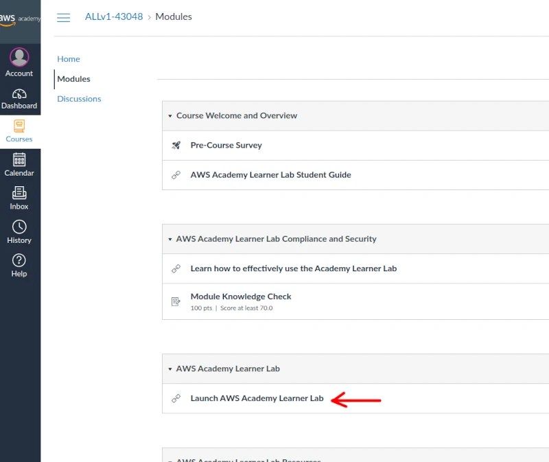

Find and Deploy a AI Chat to the Cloud
Overview
In this scenario, you were recently hired by a small startup company that for privacy and cybersecurity reasons, they want you to build an AI Chat in the Cloud.
Business Requirements
- AI Chat Privacy
Project Requirements
- Find and deploy an AI chat to the cloud (ex: ollama) for the company to use internally without sending any information to the internet
- Use enough resources for it to run well - it doesn’t need to scale automatically
- It does need to be able to manually be scaled up
- Use AWS (Amazon Web Services) if possible
- Use an ollama model that will fit on a server with less than 32 GB of storage space
Table of Contents
- Setting up and logging in to your AWS Academy account
- Connecting to AWS Learner Lab
- AWS EC2 (Elastic Cloud Computing)
- Run the ollama install script
- Test the ollama Chat AI
- Deploy the Site to the Internet
- Find the private IP address for the server
- Open the firewalls to allow the website to work on the server
- Open port 8080 in the ACL firewall for the website
- Install and start a web interface for the Chat AI
- Troubleshooting & Common Problems
- Learning More
-
To set up your AWS Academy account, open your email invitation from AWS Academy (notifications@instructure.com) and click Get Started.
Note: If you don’t see the email, check your junk, spam, or promotional mail folder.

-
After clicking the Get Started button, you will be redirected to a web page for creating an account or login using existing AWS Academy credentials. Please note that while the email being used is your byui.edu email, this is not your byui.edu password. You should not use the same password for AWS Academy as your byui.edu I-Learn account. AWS Academy does not utilize single sign-on services and is an entirely separate service and account from byui.edu. Unless you already have an AWS Academy account, select Create My Account. If you already have an AWS Academy account, select the I Have a Canvas Account option and use your AWS Academy credentials to login and accept the invitation to this course. Also, note the AWS Academy Learner Lab number will be different for your course than the [36035] shown below. This is NOT your I-Learn credentials. They are separate accounts.

-
After creating credentials, choose Student Login in the future and log in with your email address and password at https://awsacademy.instructure.com
-
From the LMS dashboard, choose the BYUI AWS Academy Learning Lab for the class you are accessing. Your instructor will provide a 5 digits identifier for your course to access the learner lab sandbox for your given class. Note: If you have been invited to more than one course or Lab, you will see multiple tiles on the dashboard.

-
In the navigation menu, choose Modules.

-
Choose the Learner Lab link.
 -
Click Start Lab (arrow #1) and wait for the circle (arrow #2) to turn from yellow to green.

-
Once the circle is green, click AWS (arrow #2 above) and it will open a new window
- AWS offers many free resources to host your own website: Check out AWS Free Web Apps.
-
AWS (Amazon Web Service) has EC2, the main way to deploy a server with an operating system such as Linux.
-
When in your AWS console, search EC2 in the search bar and click EC2

-
Click Launch Instance
-
Pick a name for the server like AI Chat

-
Click on Amazon Linux
-
Pick how much processing power and RAM you want. We will use a t2.large

The larger the instance type, the more it costs per hour. You will want to turn this one off if you are not using it. After 4 hours your learner lab will turn it off, but in a normal AWS account it would not turn off unless you turn it off manually.
-
Click Create New Key Pair. This is the security key you need to connect to the server. It is like a password file.

-
Name the key and keep the settings at their default (RSA key pair type, and .pem key file format).
Click Create Key Pair and this will download it to your computer. Make sure to save this in a place where you will remember where it is.
-
Select the ports that you want open to be able to access the server (e.g port 22 (selected by default) to ssh into the server).
Add port 3000 that we will use for the web interface of the Chat AI.

-
Pick how much hard drive space you need on the server. Put 32 GB.

Click Launch Instance
-
Click Connect to Instance
-
Click Connect.

-
Alternatively, you could use Powershell or terminal to ssh in with the key you downloaded earlier. You would need to find the public IP of your EC2 instance in the details page under instances in the EC2 dashboard and run the following command (replace 3.3.3.3 with your public IPV4 address):
ssh -i yourkey.pem ubuntu@3.3.3.3
-
-
Make sure to update the instance often
This gets and applies the updates for the software and services that need updates
sudo yum update
This reboots/restarts the server (Only need to do this on kernel or Major OS updates)
sudo reboot
Reconnect with the steps above after about a minute for the reboot
-
curl -fsSL https://ollama.com/install.sh | sh
ollama pull llama3.2
ollama run llama3.2
-
Find the email invite that was sent to your BYU-I email address that ends in @byui.edu
-
Are you in the correct region? Did you click on the top right corner of AWS to connect to the Oregon region
Project Instructions
Setting up and logging in to your AWS Academy account
Your instructor will create an AWS Academy course that will be used to create sandbox accounts for you as a student. This sandbox account will be an AWS account with a $50 credit assigned to you. There are no requirements for you to purchase or provision any account from AWS. You will not be required to spend any money or provide credit card information.
Your instructor has created a user account in the AWS Academy course for you. As part of the course creation, you will receive an email invitation to join the course. Please note AWS Academy uses Canvas like I-Learn; however, this is not the same Canvas account as BYUI. You will be creating new credentials in AWS Academy with your byui.edu email address. If you have previously created an AWS Academy account, you will use those AWS Academy credentials and can skip to step 3 of this section.
Connecting to AWS Learner Lab
AWS EC2 (Amazon Web Services Elastic Cloud Compute)
Connecting to the Server
Run Security Updates
Install ollama (a free Chat AI)
Troubleshooting & Common Problems
If you can't access AWS
You can't see the EC2 instance?
Learning More
Want to learn more about AWS and obtain an AWS certification? Take ITM300 Cloud Foundations.
Build your resume: Deployed a Custom Chat AI to an AWS EC2 instance.
Build your resume (possible FUTURE project): Deployed a Custom Chat AI with custom RAG and connected it to an RDS database with Cognito authentication
Learning More - Create a serverless app model (SAM) with Lambda
Create a CD/CI pipeline
Implement Git
Learning More - Create a serverless app model (SAM) with Lambda
Working with AWS serverless applications using the AWS Toolkit